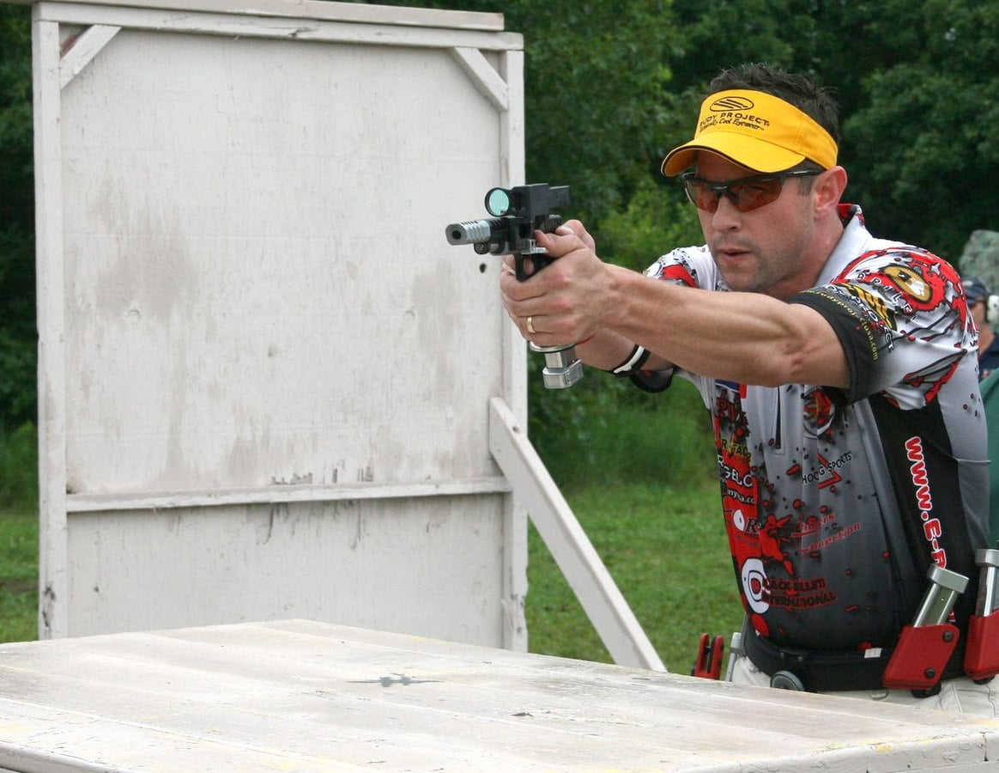
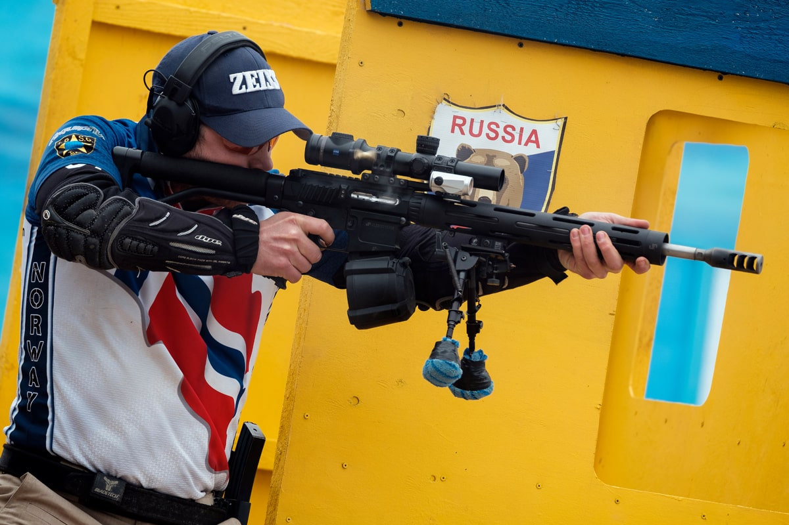
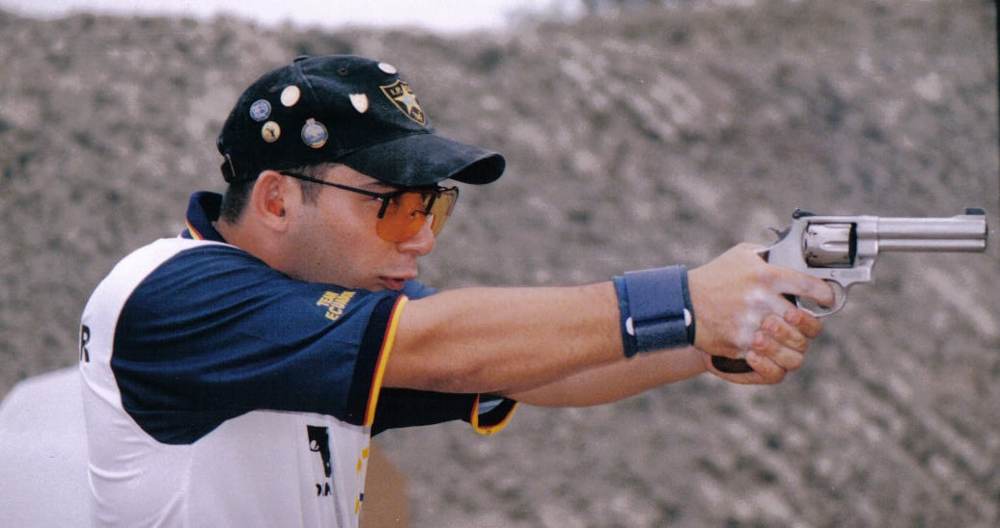

Pratik çekim
Hareketli atışveya
dinamik atış olarak da bilinen pratik atış , hızın hassasiyet kadar önemli olduğu atış sporları için geçerli olan genel bir terimdir. Disiplinlerin çoğu hareketi içerir ve tabanca kullanırken genellikle kılıftan çekilirler.
- Uluslararası Pratik Atıcılık Konfederasyonu(IPSC), pratik atıcılık alanındaki en eski ve en büyük yaptırım organıdır. IPSC bazen atıcılık sporlarının "Formula 1"i olarak kabul edilir
ve tabancalar, tüfekler ve pompalı tüfeklerle vurulur. Amerika Birleşik Devletleri Pratik Atıcılık Derneği(USPSA), IPSC'nin ABD'deki bölgesel bağlı kuruluşudur, USPSA'nın kurallarının çoğu uluslararası olarak kullanılanlardan biraz farklıdır. IPSC, eski polis ve sivil nişancılar tarafından geliştirildi ve daha sonra modern askeri ve polis tatbikatları için bir temel olarak kullanıldı.
Bu, atıcının atış sırasında sıklıkla hareket ettiği ve atılan vuruşların ve atış süresinin eşit derecede önemli olduğu bir varyasyondur. Aşama prosedürü genellikle dikte edilmez (serbest stil) ve atıcının, hedefleri angaje etme sırasını ve tarzını belirlemesine izin verilir.
- Uluslararası Savunma Tabancası Derneği (IDPA), gizli atışa güçlü bir vurgu yapan yarı otomatik tabancalar ve revolverler kullanan bir aksiyon atış sporudur. Etap katılımının birçok yönü yarışmacılara dikte edilir ve güvenlik görevlisinin rekabet avantajı elde etmeye çalıştığını veya "suçlu bir zihinle" yasak bir eylemde bulunduğunu - bilerek doğru yapmadığını belirlediği yarışmacılara cezalar verilir.
- Çoklu silah, aşamaların her birinin genellikle yarışmacının tüfek, tabanca ve/veya pompalı tüfek [28] veya diğer ateşli silah türlerini kullanmasını ve bunlar arasında geçiş yapmasını gerektiren pratik atış etkinlikleridir. 3-Gun'un sıradan IPSC/USPSA maçlarıyla pek çok ortak yönü vardır; atıcının farklı aşamalardan geçmesi ve çeşitli farklı konumlardaki hedeflere saldırması gereken ateş yolları vardır.
- Steel Challenge , yalnızca çelik hedefleri mümkün olan en hızlı şekilde vurmakla ilgili bir hızlı atış şampiyonası ve Steel Challenge Shooting Association (SCSA) tarafından yönetiliyor. Sekiz standart ateş rotası vardır ve zamanlayıcıyı durdurmak için en son özel bir "durdurma plakası" atılmalıdır.
- Uluslararası Tabanca Meraklıları Konfederasyonu (ICORE), tabancalarla aksiyon atış yarışmalarını destekleyen uluslararası bir topluluktur. 1991'de kurulan sporda Bianchi Cup, IPSC ve Steel Challenge'dan unsurlar var
- IPSC Action Air , gerçek ateşli silahlar yerine airsoft kullanarak IPSC ile aynı prensibi izler . Menziller, kağıt hedefler ve fırlatıcılar, airsoft'a uyacak şekilde küçültüldü ve spor , gerçek ateşli silahların sivil mülkiyetinin yasa dışı veya elde edilmesinin son derece zor olduğu Tayvan , Hong Kong ve Japonya gibi ülkelerde popülerlik kazanıyor.
- Bowling lobut atışı (öncelikle tabancalarla yapılan atış), yarışmacıların geçen en kısa sürede bir masadan standart lobutları devirmek için birbirleriyle yarışmasına neden olur.



Dinamik Atış ve Hareketli Atış
Dinamik atış veya hareketli atış olarak da bilinen pratik atış , yarışmacıların belirli bir minimum güç faktörüne sahip bir ateşli silah kullanarak üç hassasiyet , güç ve hız ilkesini birleştirmeye çalıştıkları bir dizi atış sporudur.en kısa sürede (veya bazen belirli bir maksimum süre içinde) mümkün olduğunca çok puan toplamak. Puanlama sistemleri organizasyonlar
arasında farklılık gösterse de, her biri parkurun tamamlandığı zamanı ölçer ve yanlış atış için cezalar verir. Kurslar "aşamalar" olarak adlandırılır ve atıcılar tarafından ayrı ayrı çekilir. Genellikle atıcı hareket etmeli ve birkaç pozisyondan ateş etmeli, engellerin altından veya üzerinden ve diğer alışılmadık pozisyonlarda ateş etmelidir. Standart egzersizler veya hedeflerin belirlenmiş
düzenlemesi yoktur ve kurslar genellikle atıcının yaratıcı olması gerektiği şekilde tasarlanır ve bu nedenle egzersizlerin çözümleri bazen atıcılar arasında değişir.